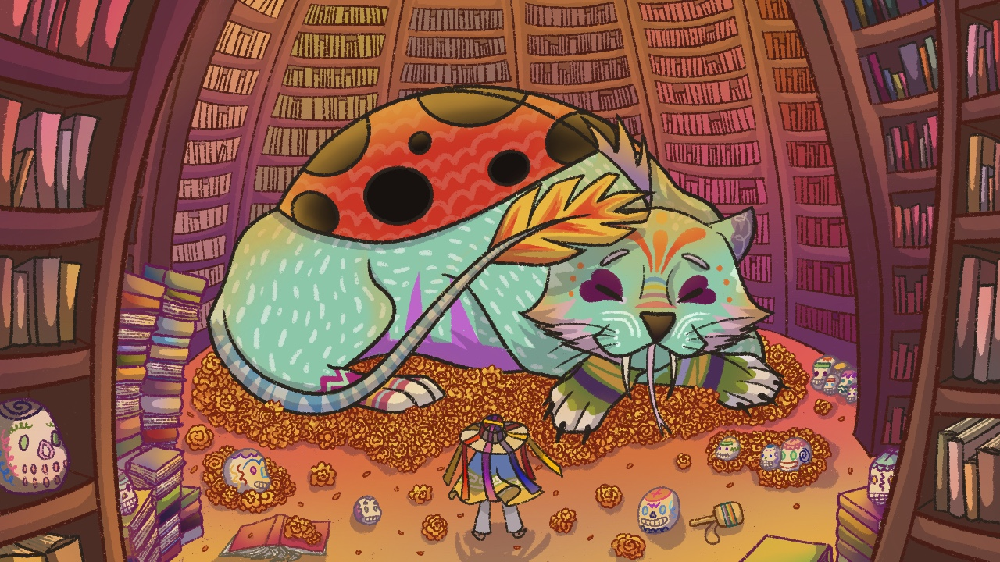
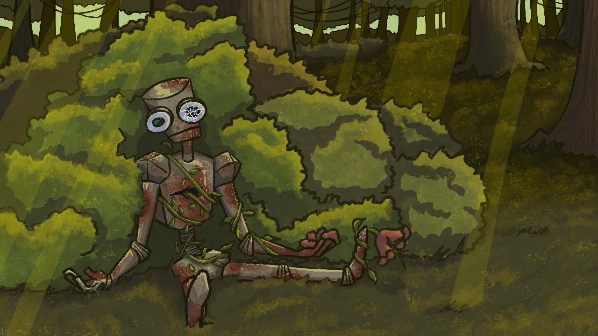
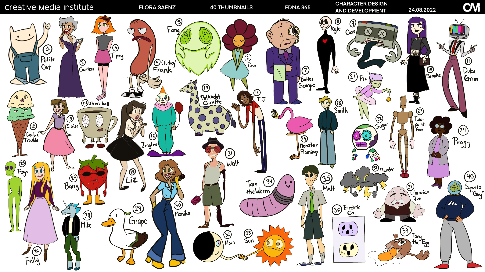

From traditional art to digital illustration, 3D modeling,
and motion capture, my creative journey has always been about
experimenting, learning, and bringing ideas to life.
I started drawing in third grade and stuck with traditional
media for years. When I first tried digital art, I didn't enjoy
it as much as I expected. Then March 2020 happened, and I found
myself at home with a new iPad meant for college. I downloaded
Procreate, and my life changed. Here are some of my favorite
projects since then.

01 / DIGITAL ILLUSTRATION
Alebrije
This is the first digital piece I was truly proud of,
and I still am. Inspired by Alebrijes, fantastical
Mexican folk-art creatures, this piece pushed me to
experiment with a non-human subject, full-color
rendering, and a detailed background.
Focus: Digital painting · Character design

02 / CONCEPT ART
Nature Reclaims
This piece came from a freestyle assignment. I've always
been drawn to stories where nature reclaims abandoned
spaces, so I explored that idea with a broken-down robot
tangled in weeds and grass. My favorite details are the
rays of light, which I was drawing for the first time,
and the robot's pose.
Focus: Environment storytelling · Lighting

03 / CHARACTER DESIGN
40 Original Characters
This assignment involved creating 40 completely original
characters. It made me realize just how many character
ideas I can come up with! Some concepts were more
straightforward than others, but at least five have
since found their way into ideas for other potential
projects.
Focus: Ideation · Character development
04 / 3D SCULPTING
Kaiju Model
One of my favorite 3D models, this Kaiju was created
in ZBrush for a modeling assignment. I remember my
laptop fan going absolutely wild while I worked on it.
The project took approximately 12 hours to complete,
making it one of my more intensive sculpting sessions.
Tools: ZBrush · 3D sculpting
05 / 3D MODELING
Insect Anatomy Study
This ZBrush project focused on studying and modeling
the body parts of an insect. It was a fascinating
assignment that challenged me to pay attention to
anatomical structure and detail. Having a reference
helped, and the project took around five to six hours.
Tools: ZBrush · Anatomical reference
06 / MOTION CAPTURE
Motion Capture Experiment
This was one of my motion capture assignments. Some
parts turned out rough, particularly the object
intersections, limited finger movement, and lip-sync.
Still, the project was a great learning experience.
I also recorded the voiceover at the last minute,
whispering so I wouldn't wake my sleeping roommate.
I edited the video and added the sound effects myself.
Sometimes I miss those all-nighters!
Focus: Motion capture · Video editing · Sound design